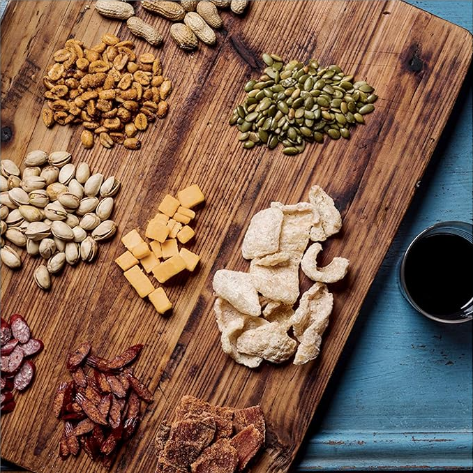

Gas Station Charcuterie Plate
All images and information for this recipe comes from the Amazon listing for the "You Suck at Cooking" Cookbook.

This is not an affiliate link and I do not receive and financial compensation if you use it. However, I did purchase this book and I love it!

Description
The Gas Station Charcuterie Plate is possible because we live
in the golden age of mobile snacking. It is also bound to be a hit
because of the human tendency to equate variety with quality.
Which is not to say the foods at gas stations are of low quality.
It's just easy to take for granted the fact that you can get food,
on a whim. at any time of the day or night. at these lonely fossil
fuel outposts. In the future. a mobile rest stop subscription
service will pull up beside you while you'rc driving, refuel your
car, give you snacks, and let you use the restroom. all at 65 miles
per hour. And the fuel will be laser beams.
Ingredients
- Washer fluid
- Gasoline of your choice
- Pepperoni sticks
- Almonds
- Beef jerky
- Cheese
- Roasted almonds
- Salted pistachios
- Honey-roasted peanuts
- Barbecue peanuts
- Pumpkin seeds
- Sunflower seeds
- Dark chocolate
- Any other interesting snacks you can find at the gas station
Steps
-
Pop the hood Of your car and locate
your washer fluid reservoir (normally a
translucent white tank with a water symbol
on the cap). Remove the cap and add washer
fluid until the reservoir is full, Replace the
cap and close the hood.
- Fill your gas tank with gas.
-
Go inside the store with
actual money like it's the Old-
fashioned days. Locate any
interesting snacks and purchase
them. and don't forget to pay for
the gas and washer fluid, Drive
home and wash the gasoline off
your hands.
- Cut the pepperoni sticks into bite-sized pieces, Cut them at an angle if you're feeling extra fancy.
-
Arrange all the snacks on a plate. platter. or serving board in
a way that makes sense. such as grouping nuts and meats together,
or putting nuts and meats as far away as possible from each other.
Serve, and never tell your date where the snacks came from.*
Notes
*Actually, you should tell the truth about
where the snacks came from. If you don't,
and it's a first date, your relationship will be
built on a bed of lie. But if you end up having
a long relationship that ends poorly, in
the middle of a fight, you can scream "WELL
THOSE SNACKS WERE FROM THE GAS
STATION ANYWAY!"
The Gas Station Charcuterie Plate can also
be constructed with from a pharmacy,
bodega, newsstand, or if you're really desperate
, grocery store. You're just looking for
a good balance of snacks with contrasting
textures and flavors. You're just looking for
good balance of snacks with complimentary
colors and personalities. You're just looking
to tap deeply into humanities' long lineage
of foraging to make best of a not even
remotely difficult situation.